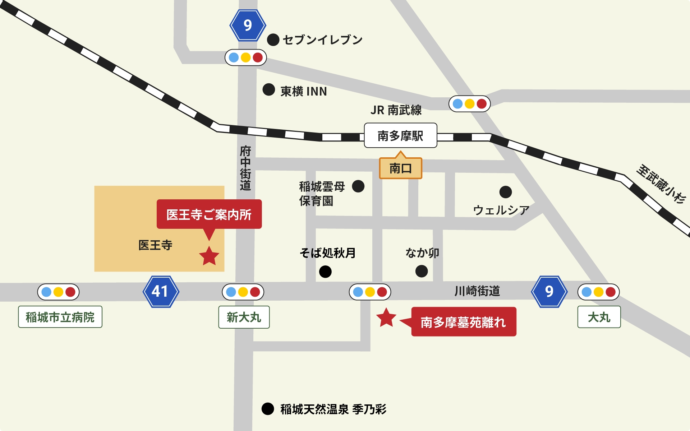

INFORMATION
お知らせ
ACCESS
交通案内

-
〒206-0801 東京都稲城市大丸1417（googleマップで見る）
-
「南多摩駅」から徒歩2分
-
駐車場50台以上
電車で「南多摩駅」までお越しの場合
- 京王線からJR南南武線に乗り換え「分倍河原駅」より乗車5分
- 小田急線からJR南武線に乗り換え「登戸駅」より乗車15分
- 京王相模原線に乗り換え「調布駅」より乗車15分（※「京王稲田堤」下車、JR「稲田堤」乗り換えの場合）
お車でお越しの場合
- 中央自動車道「府中スマートIC」より車で5分（約2.5km）
- 中央自動車道「稲城IC」より車で7分（約3.5km）
- 川崎街道・鶴川街道交差点「矢野口」信号より車で7分（3.3km）